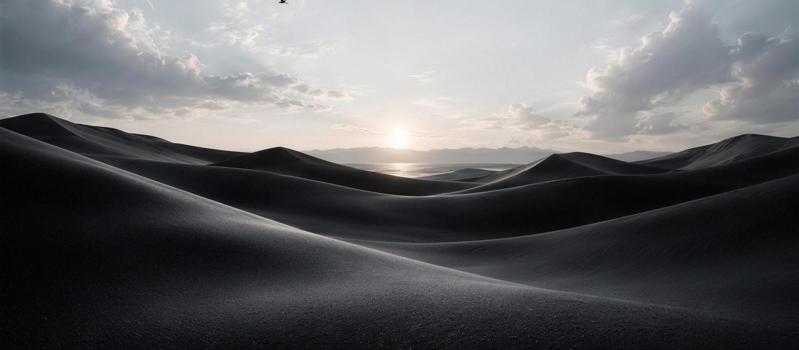
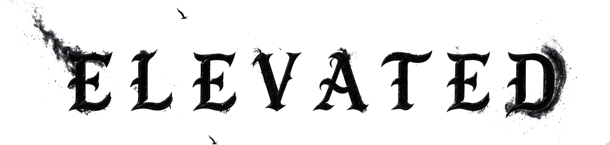
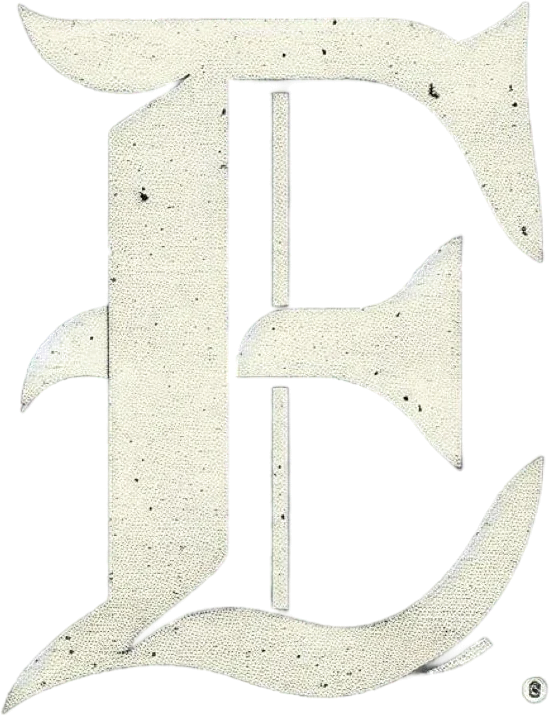

Elevated Field Sales


Above all else
The Ladder
Your Growth
Learn, sell, grow.
1-on-1 coaching · Warm leads · Production bonuses
Build teams, duplicate systems, and scale.
Create your own culture · Scale opportunity · Grow your business
Overrides, commission bonuses, and exclusive travel events.
Run multiple divisions of your own.
Teams across multiple campaigns · Access to the private network · Build your own social brand
Not just a team. A lifestyle.
Divisions
Campaigns
Three campaigns, multiple routes to success.
Live and hiring
Fiber
Fiber, solar, alarms, pest, autoglass — anything at the door.
Live and hiring
Virtual High Ticket
Closing high-ticket peptide packages, fully remote with residual income. B2C and B2B.
Live and hiring
Life Insurance
Remote sales for licensed producers. Active territories, taking reps now.

Our movement
Elevated Management runs on 5 core values. Not just a team, a family of growth in all aspects.